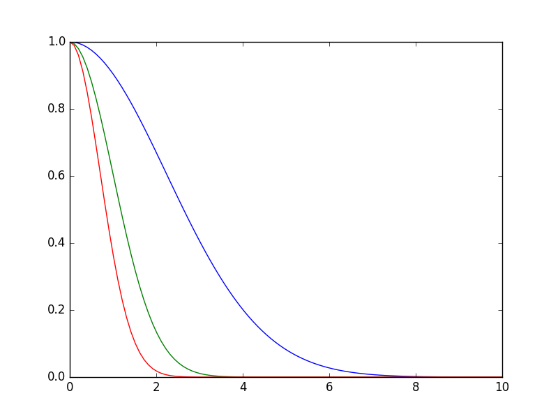
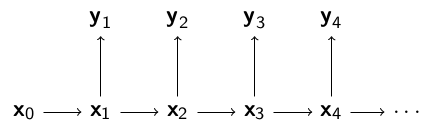
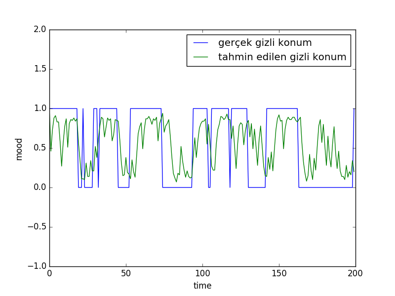

Parçacık Filtreleri (Particle Filters)
Parcaçık filtreleri Kalman filtrelerinde olduğu gibi saklı bir konum bilgisi hakkında dış ölçümler üzerinden kestirme hesabı yapabilir. Her parçacık bir hipotezi, farklı bir konum bilgisini temsil eder, olasılığı, olurluğu ölçüm fonksiyonudur. Eğer bu olasılık değeri problemden direk elde edilebilen bir şey değilse, bir ölçüm / hipotez / tahmin arasındaki mesafeyi (hatayı) olurluğa çevirmek mümkün. Burada genellikle
$$ p(y_t|x_t) \sim e^{-\lambda \varepsilon^2}$$
fonksiyonu kullanılır, $\lambda$ bir tür hassaslık parametresi, bu parametre üzerinden olurluk ya daha az ya da daha fazla etkin hale gelir, $\varepsilon$ ölçüm ve tahmin arasındaki bir mesafe olacaktır.
x = np.linspace(0,10,100)
def f(x,lam): return np.exp(-lam * x**2)
plt.plot(x,f(x,lam=0.1))
plt.plot(x,f(x,lam=0.5))
plt.plot(x,f(x,lam=1.0))
plt.savefig('tser_pf_03.png')

Kalman Filtrelerine ve Saklı Markov Modellerinde gördüğümüz modeli hatırlayalım,

Bu modelde gözlemler, yani dışarıdan görülen ölçümler $y_1,y_2,..$ ve bu rasgele değişkenler şartsal olarak eğer $x_0,x_1,.$ verili ise birbirlerinden bağımsızlar. Model,
$\pi(x_0)$ başlangıç dağılımı
$f(x_t|x_{t-1})$, $t \ge 1$ geçiş fonksiyonu
$g(y_t|x_t)$, $t \ge 1$, gözlemlerin dağılımı
$x_{0:t} = (x_0,..,x_t)$, $t$ anına kadar olan gizli konum zinciri
$y_{1:t} = (y_1,..,y_t)$, $t$ anına kadar olan gözlemler
Genel olarak filtreleme işleminin yaptığı şudur: nasıl davrandığını, ve dışarıdan görülebilen bir ölçütü olasılıksal olarak dışarı nasıl yansıttığını bildiğimiz bir sistemi, sadece bu ölçümlerine bakarak nasıl davrandığını anlamak, ve bunu sadece en son noktaya bakarak yapmak, yani sistemin konumu hakkındaki tahminimizi sürekli güncellemek.
Mesela bir obje zikzak çizerek hareket ediyor. Bu zikzak hareketinin formülleri vardır, bu hareketi belli bir hata payıyla modelleriz. Fakat bu hareket 3 boyutta, diyelim ki biz sadece 2 boyutlu dijital imajlar üzerinden bu objeyi görüyoruz. 3D/2D geçişi bir yansıtma işlemidir ve bir matris çarpımı ile temsil edilebilir, fakat bu geçiş sırasında bir kayıp olur, derinlik bilgisi gider, artı bir ölçüm gürültüsü orada eklenir diyelim. Fakat tüm bunlara rağmen, sadece eldeki en son imaja bakarak bu objenin yerini tahmin etmek mümkündür.
Mesela zikzaklı harekete yandan bakıyor olsak obje sağa giderken bir bizden uzaklaşacak yani 2 boyutta küçülecek, ya da yakınlaşacak yani 2 boyutta büyüyecek. Tüm bu acaipliğe (!) rağmen eğer yansıtma modeli doğru kodlanmış ise filtre yeri tespit eder. Her parçacık farklı bir obje konumu hakkında bir hipotez olur, sonra objenin hareketi zikzak modeline göre, algoritmanin kendi zihninde yapılır, bu geçiş tüm parçacıklar / hipotezler üzerinde işletilir, sonra yine tüm parçacıklar ölçüm modeli üzerinden yansıtılır. Son olarak eldeki veri ile bu yansıtma arasındaki farka bakılır. Hangi parçacıklar daha yakın ise (daha doğrusu hangi ölçümün olasılığı mevcut modele göre daha yüksek ise) o parçacıklar hayatta kalır, çünkü o parçacıkların hipotezi daha doğrudur, onlar daha "önemli" hale gelir, diğerleri devreden çıkmaya başlar. Böylece yavaşça elimizde hipotez doğru olana yaklaşmaya başlar.
Matematiksel olarak belirtmek gerekirse, elde etmek istediğimiz sonsal dağılım $p(x_{0:t} | y_{1:t})$ ve ondan elde edilebilecek yan sonuçlar, mesela $p(x_t | y_{1:t})$. Bu kısmi (marginal) dağılıma filtreleme dağılımı ismi de veriliyor, kısmi çünkü $x_{1:t-1}$ entegre edilip dışarı çıkartılmış. Bir diğer ilgilenen yan ürün $\phi$ üzerinden $p(x_{0:t} | y_{1:t})$'nin beklentisi, ona $I$ diyelim,
$$ I(f_t) = \int \phi_t(x_{0:t}) p(x_{0:t} | y_{1:t}) \mathrm{d} x_{0:t} $$
En basit durumda eğer $\phi_t(x_{0:t}) =x_{0:t}$ alırsak, o zaman şartsal ortalama (conditional mean) elde ederiz. Farklı fonksiyonlar da mümkündür [1].
Üstteki entegrali $x_{0:t} | y_{1:t}$'den örneklem alarak ve entegrali toplam haline getirerek yaklaşıksal şekilde hesaplayabileceğimizi [2] yazısında gördük. Fakat $x_{0:t} | y_{1:t}$'den örnekleyemiyoruz. Bu durumda yine aynı yazıda görmüştük ki örneklenebilen başka bir dağılımı baz alarak örneklem yapabiliriz, bu tekniğe önemsel örnekleme (importance sampling) adı veriliyordu. Mesela mesela herhangi bir yoğunluk $h(x_{0:t})$ üzerinden,
$$ I = \int \phi(x_{0:t}) \frac{ p(x_{0:t}|y_{1:t}) }{ h(x_{0:t}) } h_{0:t} \mathrm{d} x_{0:t} $$
yaklaşıksal olarak
$$ \hat{I} = \frac{1}{N} \sum_{i=1}^{N} \phi (x^i_{0:t}) w^i_t $$
ki
$$ w^i_t = \frac{p(x^i_{0:t}|y_{1:t})}{h(x^i_{0:t})} \qquad (1) $$
ve bağımsız özdeşçe dağılmış (i.i.d.) $x^1_{0:t}, .., x^N_{0:t} \sim h$ olacak şekilde. Yani örneklem $h$'den alınıyor.
Bu güzel, fakat acaba $w^i_t$ formülündeki $p(x^i_{0:t}|y_{1:t})$'yi nasıl hesaplayacağız? Ayrıca $h$ nasıl seçilecek? Acaba üstteki hesap özyineli olarak yapılamaz mı, yani tüm $1:t$ ölçümlerini bir kerede kullanmadan, $t$ andaki hesap sadece $t-1$ adımındaki hesaba bağlı olsa hesapsal olarak daha iyi olmaz mı?
Bu mümkün. Mesela önemsel dağılım $h$ için,
$$ h(x_{0:t}) = h(x_t | x_{0:t-1}) h(x_{{0:t-1}}) \qquad (2) $$
Üstteki ifade koşulsal olasılığın doğal bir sonucu. Peki ağırlıklar özyineli olarak hesaplanabilir mi? Bayes Teorisini kullanarak (1)'in bölünen kısmını açabiliriz,
$$ w_t = \frac{p(x_{0:t}|y_{1:t})}{h(x_{0:t})} = \frac{p(y_{1:t}|x_{0:t}) p(x_{0:t})}{h(x_{0:t})p(y_{1:t}) } \qquad (3) $$
çünkü hatırlarsak $P(A|B) = P(B|A)P(A) / P(B)$, teknik işliyor çünkü $P(B,A)=P(A,B)$.
Şimdi $h(x_{0:t})$ için (2)'de gördüğümüz açılımı yerine koyalım,
$$ w_t = \frac{p(y_{1:t}|x_{0:t}) p(x_{0:t})}{h(x_t | x_{0:t-1}) h(x_{{0:t-1}}) p(y_{1:t}) } $$
Ayrıca gözlem dağılımı $g$'yi $p(y_{1:t}|x_{0:t})$'yi, ve gizli geçiş dağılımı $f$'i $p(x_{0:t})$ açmak için kullanırsak,
$$ = \frac {g(y_t|x_t) p(y_{1:t-1}|x_{0:t-1}) f(x_t|x_{t-1})p(x_{0:t-1}) } {h(x_t|x_{0:t-1}) h(x_{{0:t-1}}) p(y_{1:t})} $$
Ustteki formülde bolunendeki 2. carpan 4. carpan ve bolende ortadaki carpana bakalım, bu aslında (3)'e göre $w_{t-1}$'in tanımı değil mi?
Neredeyse; arada tek bir fark var, bir $p(y_{1:t-1})$ lazım, o üstteki formülde yok, ama onu bölünene ekleyebiliriz, o zaman
$$ = w_{t-1} \frac{g(y_t|x_t) f(x_t|x_{t-1})p(y_{1:t-1}) } {h(x_t|x_{0:t-1}) p(y_{1:t})} $$
Hem $p(y_{1:t})$ hem de $p(y_{1:t})$ birer sabittir, o zaman o değişkenleri atarak üstteki eşitliğin oransal doğru olduğunu söyleyebiliriz. Ayrıca bu ağırlıkları artık normalize edilmiş parçacıklar bazında düşünürsek, $\tilde{w}^i_t = \frac{w_t^i}{\sum_j w_t^j}$, o zaman
$$ \tilde{w}^i_{t} \propto \tilde{w}^i_{t-1} \frac{g(y_t|x_t) f(x_t|x_{t-1}) } {h(x_t|x_{0:t-1}) } $$
Eğer başlangıç dağılımı $x_0^{(1)}, ..., x_0^{(N)} \sim \pi(x_0)$'dan geliyor ise, ve biz $h(x_0) = \pi(x_0)$ dersek, ayrıca önem dağılımı $h$ için $h(x_t|x_{0:t-1}) = f(x_t|x_{t-1})$ kullanırsak, geriye
$$ \tilde{w}^i_{t} \propto \tilde{w}^i_{t-1} g(y_t|x_t) $$
kalacaktır.
Burada ilginç bir nokta sistemin geçiş modeli $f$'in önemlilik örneklemindeki teklif (proposal) dağılımı olarak kullanılmış olması.
Tekrar Örnekleme
Buraya kadar gördüklerimiz sıralı önemsel örnekleme (sequential importance sampling) algoritması olarak biliniyor. Fakat gerçek dünya uygulamalarında görüldü ki ağırlıklar her adımda çarpıla çarpıla dejenere hale geliyorlar. Bir ilerleme olarak ağırlıkları her adımda çarpmak yerine her adımda $w_t$ $g$ üzerinden hesaplanır, ve bir ek işlem daha yapılır, eldeki ağırlıklara göre parçacıklardan "tekrar örneklem" alınır. Bu sayede daha kuvvetli olan hipotezlerin hayatta kalması diğerlerinin yokolması sağlanır.
Nihai parcaçık filtre algoritması şöyledir,
particle_filter$\left( f, g, y_{1:t} \right)$
-
Her $i=1,..,N$ için
- $\tilde{x}t^{(i)} \sim f(x_t|x{t-1}^{(i)})$ örneklemini al, ve $\tilde{x}{0:t}^{(i)} = ( \tilde{x}{0:t-1}^{(i)},\tilde{x}_{t}^{(i)})$ yap.
- Önemsel ağırlıklar $\tilde{w}_t^{(i)} = g(y_t|\tilde{x}^{{i}})$'ı hesapla.
- $N$ tane yeni parçacık $(x_{0:t}^{(i)}; i=1,..,N )$ eski parçacıklar ${ \tilde{x}^{(i)}{0:t},...,\tilde{x}^{(i)}{0:t} }$ içinden normalize edilmiş önemsel ağırlıklara göre örnekle.
- $t = t + 1$
Örnek
Ali'nin ruh halini modelleyelim. Ali mutlu ya da üzgün olabiliyor, her 10 dakikada Ali'nin ruh hali 0.1 olasılıkla değişiyor, mutluysa üzgün, üzgünse mutlu olabiliyor. Eğer Ali mutlu ise 0.8 şansıyla gülmesi mümkün, üzgün ise 0.2 olasılıkla gülebilir. Önce kendimiz verili olasılıklara göre yapay bir veri üreteceğiz. Ardından bu veriye bakıp sadece gülme / gülmeme verilerine, ölçümlerine bakarak Ali'nin hangi ruh halinde olduğunu takip etmeye uğraşacağız.
import smile
y,Ttotal,a,b,xs = smile.prepare_data()
M=100
xp=np.ones((M,Ttotal))
x= np.random.randint(2,size=(M,Ttotal))
#contains weights for each particle at each time step
w=np.ones((M,Ttotal))
#normalize weights
w=w/M
k=0
for t in range(1,Ttotal):
r1 = np.random.rand(M)
for i in range(M):
if r1[i] < a:
xp[i,t] = 1-x[i,t-1]
k=k+1
else:
xp[i,t] = x[i,t-1]
if y[t] == xp[i,t]:
w[i,t] = b
else:
w[i,t] = 1-b
w[:,t] = w[:,t] / sum(w[:,t])
j=0
while j < M-1:
i = np.random.randint(M)
if np.random.rand() < w[i,t]:
x[j,t] = xp[i,t]
j = j+1
pred = np.zeros(Ttotal)
for t in range(Ttotal):
pred[t] = (sum(xp[:,t])/M)
plt.plot([i for i in range(Ttotal)], xs)
plt.ylim([-1,2])
plt.plot([i for i in range(Ttotal)], pred)
plt.legend([u'gerçek gizli konum', 'tahmin edilen gizli konum'])
plt.xlabel('time')
plt.ylabel('mood')
plt.savefig('tser_pf_01.png')

Hata fonksiyonu
$$ w^{[i]} = \frac{1}{1 + (y^{[i]} - p^{[i]})^2 )} $$
olan parçacık filtreleri için kod şurada. Bu filtrenin kullanımı için bakınız [3] yazısı.
from numpy import *
from numpy.random import *
class PF:
def __init__(self, K, n):
self.H = append(K, [[0], [0], [0]], axis=1)
self.n = n
self.x = zeros((self.n, 4))
self.x[:,:] = array([1., 1., 165., -1])
def normalize_2d(self, x):
return array([x[0]/x[2], x[1]/x[2], 1.0])
def resample(self, weights):
n = len(weights)
indices = []
C = [0.] + [sum(weights[:i+1]) for i in range(n)]
u0, j = random(), 0
for u in [(u0+i)/n for i in range(n)]:
while u > C[j]:
j+=1
indices.append(j-1)
return indices
def update(self, y):
u = uniform(-0.1, -1, self.n) # forward with uncertainty
self.x[:,2] += u
u = uniform(-40,40, self.n) # left right uncertainty
self.x[:,0] += u
p = dot(self.x,self.H.T)
for i, item in enumerate(p): # modify in place
p[i,:] = self.normalize_2d(item)
self.w = 1./(1. + (y-p)**2)
self.w = self.w[:,0]+self.w[:,1]
#self.w = self.w[:,0]
self.w /= sum(self.w)
self.x = self.x[self.resample(self.w),:]
def average(self):
return sum(self.x.T*self.w, axis=1)
Kaynaklar
[1] Gandy, LTCC - Advanced Computational Methods in Statistics, http://wwwf.imperial.ac.uk/~agandy/ltcc.html
[2] Bayramlı, Istatistik, İstatistik, Monte Carlo, Entegraller, MCMC
[3] Bayramlı, Yapay Görüş, Obje Takibi